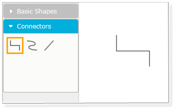
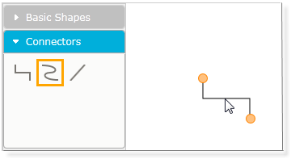
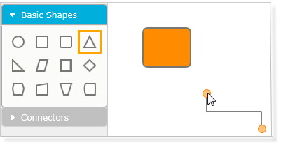
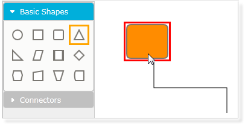
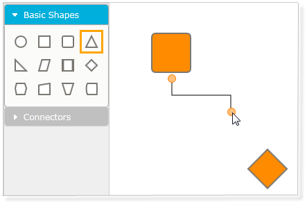
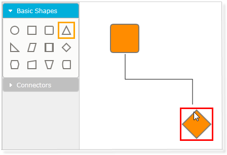

It is also possible to drag-and-drop line connectors from the symbol palette. Three shapes of the line connectors have been added in a group named Connectors. The desired line can be dragged onto the page. Initially, the head node and the tail node will be null. The steps to be followed to add a line connector from the symbol pallete are as follows:
1. Drag the desired line connector onto the page.

Figure 55: Orthogonal Line Added to the Page
2. Select the connector by clicking on the line connector shape.

Figure 56: Connector Selector
3. Drag the head selector of the line connector to the desired node to make a connection.

Figure 57: Start Dragging

Figure 58: Dragging the Head Selector
4. Similarly, drag the tail selector of the line connector to the desired node. Now, this creates a link between the two nodes.

Figure 59: Start Dragging

Figure 60: Dragging the Tail Selector